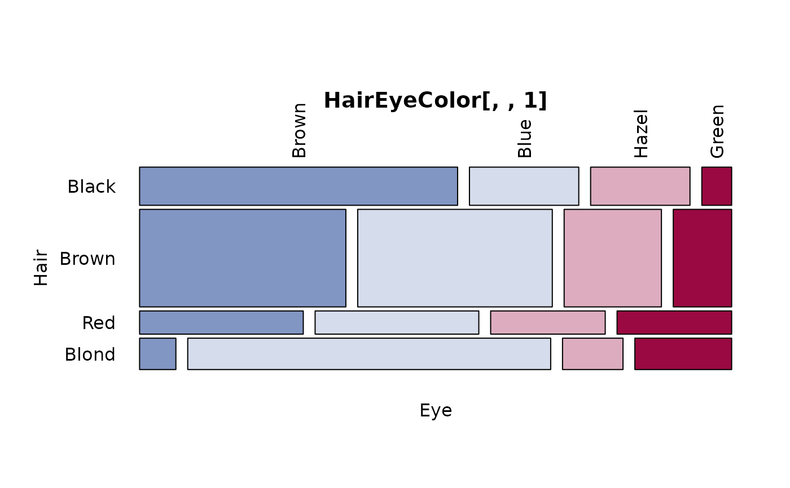

PlotMosaic.RdPlots a mosaic on the current graphics device.
PlotMosaic(x, main = deparse(substitute(x)), horiz = TRUE, cols = NULL,
off = 0.02, mar = NULL, xlab = NULL, ylab = NULL,
cex = par("cex"), las = 2, ...)a contingency table in array form, with optional category labels specified in the dimnames(x) attribute. The table is best created by the table() command. So far only 2-way tables are allowed.
character string for the mosaic title.
logical, defining the orientation of the mosaicplot. TRUE (default) makes a horizontal plot.
the colors of the plot.
the offset between the rectangles. Default is 0.02.
the margin for the plot.
x- and y-axis labels used for the plot; by default, the first and second element of names(dimnames(X)) (i.e., the name of the first and second variable in X).
numeric character expansion factor; multiplied by par("cex") yields the final character size. NULL and NA are equivalent to 1.0.
the style of axis labels. 0 - parallel to the axis, 1 - horizontal, 2 - perpendicular, 3 - vertical.
additional arguments are passed to the text function.
The reason for this function to exist are the unsatisfying labels in base mosaicplot.
list with the midpoints of the rectangles
Friendly, M. (1994) Mosaic displays for multi-way contingency tables. Journal of the American Statistical Association, 89, 190-200.
PlotMosaic(HairEyeColor[,,1])
